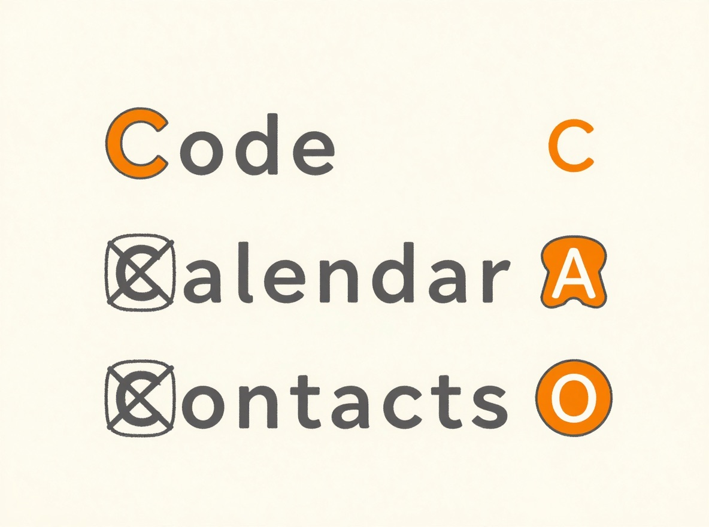
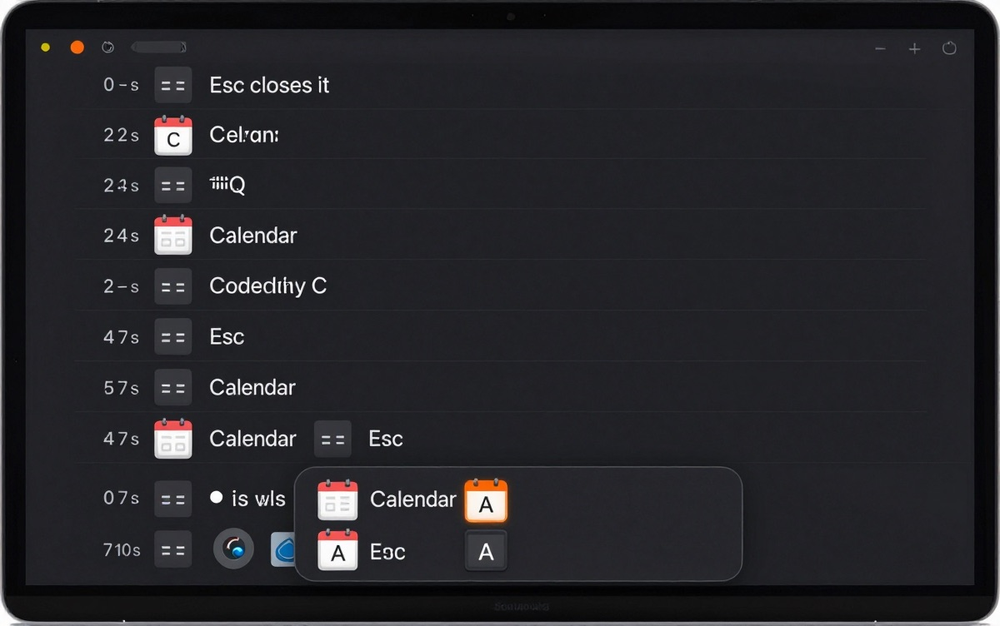
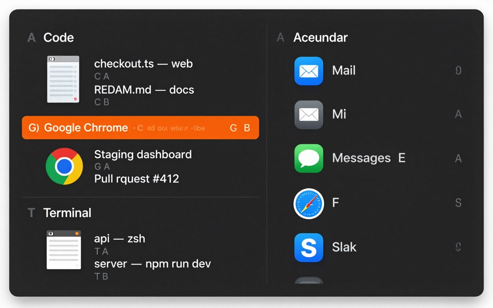

Features / Automatic keys
Automatic keysEvery app has a key. It's the same one tomorrow.
You don't have to set anything up. Each app gets a key the first time it shows up, usually the first letter of its name. Window Switcher remembers it, so Code is C today, tomorrow and next month.
● Keys don't shuffle as apps open and quit
The first free letter of its name.
When an app shows up without a key, Window Switcher reads its name and takes the first letter nobody else has. Most apps end up with a key you'd guess.
- Code gets C. Calendar, opened later, finds C taken and gets A, its next letter.
- Any free letter or digit after that. If every letter of the name is taken, it gets the next free one.
- Your keys come first. Automatic keys never use a key you've set in Settings, for an app or a window.

AI draft · replaceQuit an app, open it next week. Same key.
Window Switcher remembers each app's key. When the app comes back, it gets that key again, as long as you haven't given it to something else.
- Old keys are handed out first. A newly opened app can't take a key another app had last time.
- It survives restarts. Keys are kept with your settings on your Mac.
- The order of opening doesn't matter. Open Calendar before Code tomorrow and they still get A and C.

AI draft · replaceSet the keys you care about. Leave the rest.
Give your five most-used apps the keys you like. Everything else keeps getting a key on its own, and none of them will ever take yours.
Apps with a key you set are listed first. Everything else follows in A to Z order. If you'd rather see only your own apps, turn off "Show apps without a shortcut". How to set your own keys →

AI draft · replaceSettings that change it.
In Settings → General and Settings → Shortcuts.
Good to know.
Do I have to set anything up?
No. Open the switcher with ⌥⇥ and every app already has a key. Setting your own is optional.
Why did an app get a letter that isn't its first?
Another app already had that letter. Window Switcher takes the next free letter of the name, so Calendar becomes A when Code already has C. If you'd like a different key, set one in Settings → Shortcuts.
What happens if I give an app's automatic key to another app?
Your choice wins. The app that had it picks a new free letter the next time you open the switcher, and keeps that one from then on.
Which keys can't be used?
Tab, Esc, Return, Delete and the arrow keys. They move you around the switcher, so no app gets them.
Press ⌥⇥. Then the next key you want.
Free for the Mac. No account, nothing running in the background, and every app has a key the moment it's installed.
Download Window Switcher for Mac